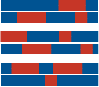

Research

Inversions
Local adaptation often requires the effect of multiple separate loci. This raises the question, how do locally adaptive loci stay together in the face of maladaptive gene flow and recombination. One solution are inversions which can link together loci across large genomic regions.In sunflowers, we have found dozens of large (1-100MBp) inversions segregating within populations. These regions are important in local adaptation and we've shown associations between inversion haplotypes and flowering time as well as seed size. We're working to understand the evolutionary history of these inversions and develop better methods to detect them in genomic sequence data.
Hybridization

The exchange of alleles between species through hybridization is an important aspect of evolution. Hybridization has enhanced diversification in rapidly speciating radiations and can spread adaptive alleles between species. We've used genomic data to detect introgression (foreign alleles) in multiple sunflower species as well as the role it's played in domestic sunflower improvement.
We use genomic data to quantify hybridization across two rapidly radiating sets of species, sunflowers and rockfish. We're interested in where and why hybridization occurs and what alleles do or do not transfer between species.
Crop-wild diversity
During domestication, genetic diversity is lost. This can cause issues when crop species are forced to adapt to new diseases or climate pressures. One solution is to introduce diversity from crop-wild relatives, this includes the wild progenitor to the domestic species and close relatives. Understanding the population genetics of these crop-wild relatives allows plant breeders to make smart choices when bringing wild species into the breeding pool.We focus on sunflowers and blueberries, two species domesticated in North America. We use genomics to understand the relationships between wild species and to identify alleles associated with climate, potential candidates for future breeding.
Visual adaptation
Opsin proteins are the molecular mechanism for light perception and vision. Evolution has acted on vision by tuning which wavelengths each opsin protein absorbs and by changing opsin gene expression. Studying opsin evolution provides a unique opportunity to link genotypic changes to functional consequences.We study opsin gene repertoire and expression in fish. Our previous work has shown the in the four-eyed fish, Anableps anableps, different opsin genes are expressed in parts of the retina. We've also found that during freshwater colonization stickleback change their opsin expression to match the available light. We have ongoing work to examine how rockfish have adapted their opsin genes to divergent habitat and body colouration patterns.